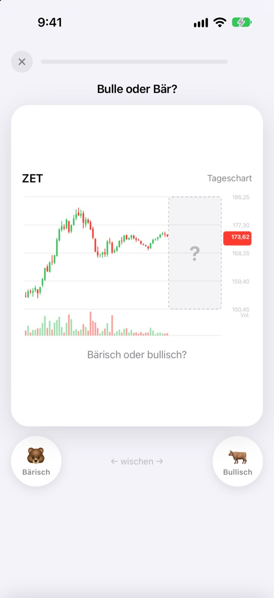

Einstieg
Börsenspiel-App und Aktien-Simulator: kostenlos üben
Börse lernen geht auch spielerisch. Welche Arten von Börsenspielen es gibt, was ein gutes Spiel ausmacht und warum Spielgeld nicht alles ersetzt.

Viele wollen die Börse verstehen, ohne gleich echtes Geld zu riskieren. Genau dafür gibt es Börsenspiele: Du triffst Entscheidungen wie an der echten Börse, aber Fehler kosten nichts. Das senkt die Hemmschwelle und macht aus trockener Theorie etwas, das Spaß macht.
Drei Arten von Börsenspielen
| Art | So funktioniert es | Gut für |
|---|---|---|
| Börsensimulator (Musterdepot) | Handeln mit virtuellem Geld zu aktuellen Kursen | Abläufe einer Order kennenlernen |
| Planspiel und Wettbewerb | Teams oder Einzelne treten mit virtuellem Startkapital gegeneinander an | Motivation durch Rangliste |
| Lernspiel | Kurze Aufgaben zu Charts, Begriffen und Prognosen, mit Erklärung | Wissen gezielt aufbauen |
Börsensimulatoren bieten viele Banken, Broker und Finanzportale als Musterdepot an. Du kaufst und verkaufst mit Spielgeld und siehst, wie sich dein Depot entwickelt. Ein bekanntes Planspiel ist das Planspiel Börse der Sparkassen, bei dem jedes Jahr viele Schülerinnen und Schüler mit virtuellem Startkapital antreten. Lernspiele gehen einen anderen Weg: Statt ein Depot zu verwalten, löst du viele kleine Aufgaben und bekommst nach jeder Antwort eine Erklärung.
Was eine gute Börsenspiel-App ausmacht
- Es erklärt, statt nur zu zählen. Ein Gewinn im Spiel sagt wenig, wenn du nicht weißt, warum. Gute Spiele zeigen nach jeder Entscheidung, was im Chart zu sehen war.
- Es belohnt Wissen, nicht Glück. Wer nur auf den nächsten Kurssprung tippt, lernt wenig. Besser sind Aufgaben, bei denen du ein Muster, einen Trend oder eine Kennzahl erkennen musst.
- Es zeigt Risiko. Verluste, Kosten und Fehlsignale gehören dazu. Ein Spiel, in dem man nur gewinnt, bereitet schlecht auf die echte Börse vor.
- Es hält dich bei der Stange. Kurze Runden, Serien und Ligen helfen beim Dranbleiben. Regelmäßiges Üben wirkt besser als ein langer Abend.
- Es startet ohne Hürden. Gut ist, wenn du ohne Konto, ohne E-Mail und ohne Depot loslegen kannst.
Aktien-Simulator ohne Anmeldung
Viele Musterdepots und Simulatoren verlangen eine Registrierung mit E-Mail-Adresse, manche sogar ein echtes Konto beim Broker. Das ist für einen ersten Versuch eine unnötige Hürde. InQuestly funktioniert ohne Konto: App laden, Lernziel wählen, loslegen. Dein Fortschritt bleibt auf deinem iPhone und in deiner iCloud.
Ein klassischer Simulator mit freiem Kaufen und Verkaufen ist InQuestly nicht. Statt eines Depots mit Spielgeld gibt es Aufgaben mit Erklärung: Charts deuten, Muster erkennen, Prognosen abgeben. Wer Orders und Depotführung ausprobieren will, findet bei vielen Brokern ein Demokonto. Mehr dazu im Artikel Trading lernen.
Börsenspiele für Schule und Jugendliche
Für Schulklassen ist das Planspiel Börse der Sparkassen ein bekanntes Angebot, das jedes Jahr läuft. InQuestly ist im App Store ab 4 Jahren freigegeben und für alle Altersgruppen gedacht, von der Schule über die Ausbildung bis zum Studium. Mit Duellen und der Wochen-Challenge lassen sich auch Gruppen gegeneinander messen.
Wo Börsenspiele an Grenzen stoßen
Spielgeld fühlt sich anders an als echtes Geld. Im Simulator fällt es leicht, eine Verlustposition zu halten oder alles auf eine Aktie zu setzen. Mit dem eigenen Ersparten reagieren die meisten Menschen vorsichtiger oder emotionaler. Dazu kommen Ordergebühren, Spreads und Steuern, die viele Spiele nicht abbilden.
Vorsicht bei Produkten, die sich wie ein Spiel anfühlen, etwa CFDs oder Hebelzertifikate. Sie vervielfachen Gewinne und Verluste. CFD-Anbieter müssen in der EU angeben, wie viele Privatanleger damit Geld verlieren, und dieser Anteil ist in der Regel hoch.
So funktioniert das Börsenspiel in InQuestly
InQuestly verbindet kurze Lektionen mit Spielen, ganz ohne echtes Geld:
- Bulle oder Bär? Du siehst eine Formation oder ein Kerzenmuster und wischst: bullisch oder bärisch? Nach jeder Runde folgt die Erklärung. Gratis.
- Muster-Detektiv: Erkenne Formationen wie Schulter-Kopf-Schulter oder Flaggen im Chart. Gratis, freigeschaltet nach der Lektion „Umkehrformationen“.
- Markt-Charts: An nachgebildeten historischen Verläufen schätzt du, wie es in den nächsten 20 Tagen weitergeht. Gratis.
- Prognosen: Gib eine Prognose ab, ob etwa der DAX oder Bitcoin am nächsten Handelstag steigt oder fällt. Gewertet wird mit echten Schlusskursen.
- Duelle mit Freunden: Chart-Duell, Wissens-Duell, Aktien-Tipprunde und Prognose-Duell, per Link verschickt.
- Wochen-Challenge und Ligen: Jede Woche dieselben Aufgaben für alle und eine Rangliste.
Welche Muster du dabei kennen solltest, erklärt der Artikel Chartmuster. Warum sich Kurse trotzdem nicht sicher vorhersagen lassen, steht im Artikel Kann man Aktienkurse vorhersagen?. Wenn du erst testen willst, wie viel du schon weißt, spiel das Börsen-Quiz im Browser.
Häufige Fragen
Gibt es ein Börsenspiel als App?
Ja. Es gibt Börsenspiel-Apps mit Spielgeld-Depot und Lern-Apps mit Spielen. In InQuestly sind zum Beispiel „Bulle oder Bär?“, der Muster-Detektiv und Prognose-Duelle mit Freunden enthalten.
Gibt es einen Aktien-Simulator ohne Anmeldung?
InQuestly funktioniert ohne Konto und ohne E-Mail. Statt freiem Handel mit Spielgeld gibt es Aufgaben mit Erklärung, Chart-Spiele und Prognosen.
Ab welchem Alter ist InQuestly geeignet?
InQuestly ist im App Store ab 4 Jahren freigegeben und für alle Altersgruppen gedacht. Unter 16 Jahren zeigt die App keine personalisierte Werbung, und für Käufe brauchen Minderjährige die Zustimmung ihrer Eltern.
Ist ein Börsenspiel kostenlos?
Viele Börsensimulatoren und Lernspiele sind kostenlos oder haben einen kostenlosen Teil. In InQuestly sind zum Beispiel Bulle oder Bär, der Muster-Detektiv und vier Grundkurse gratis.
Lernt man mit einem Börsensimulator wirklich etwas?
Ja, vor allem Abläufe wie Orderarten und Depotführung. Damit du auch verstehst, warum ein Kurs steigt oder fällt, brauchst du zusätzlich Erklärungen, etwa aus kurzen Lektionen.
Kann man im Börsenspiel echtes Geld gewinnen?
In Lernspielen und Simulatoren nicht, und das ist gewollt: Du sollst ohne Druck lernen. Wer mit echtem Geld handelt, trägt echtes Risiko bis hin zum Totalverlust.
Was ist der Unterschied zwischen Börsenspiel und Trading-App?
Eine Trading-App führt echte Orders mit echtem Geld aus. Ein Börsenspiel simuliert Entscheidungen oder fragt Wissen ab, ohne dass Geld fließt.
Dieser Artikel dient der Bildung und ist keine Anlageberatung. Beispiele sind vereinfacht und ohne Steuern dargestellt.